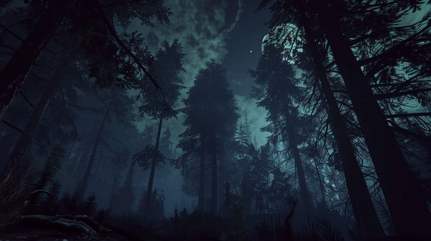

Cuentan los más antiguos del pueblo que, hace siglos, un hombre humilde quiso unir dos montañas separadas por un abismo imposible. Era minero, pero también soñador. Su gente sufría, pues cada día debía cruzar el río para llegar a las minas, y muchos morían arrastrados por las aguas heladas.
Desesperado por ayudar, el hombre se arrodilló bajo el cielo de Potosí y exclamó: “¡Si existiera un puente, mi pueblo viviría en paz!” Y esa noche, el Diablo lo escuchó.
Apareció entre el humo del azufre, con una sonrisa que no era humana. Le ofreció construir el puente, pero a cambio de su alma. El minero, temblando, aceptó con una condición: “Si logras terminarlo antes de que cante el gallo, el alma será tuya.”
El Diablo aceptó el trato. Esa noche, miles de sombras descendieron de los cerros. Las piedras se movieron solas. Los relámpagos iluminaban figuras trabajando entre las rocas, y el puente tomaba forma.
Pero cuando faltaba colocar la última piedra, el minero, desesperado, recordó que el gallo aún no había cantado. Entonces corrió a su casa, tomó una antorcha y la acercó al gallinero. El gallo, creyendo que amanecía, cantó.
El Diablo rugió de furia: “¡Me has engañado, mortal!” Y desapareció, dejando tras de sí un olor a azufre y un puente de piedra que aún se mantiene en pie. Dicen que, bajo una de las rocas, se esconde la marca de una pezuña, y que en las noches sin luna, una voz susurra los nombres de quienes lo cruzan.
Así nació El Puente del Diablo de Potosí, símbolo de fe, astucia y condena.
Años después, la leyenda se convierte en pesadilla. Eres Mateo, un joven minero descendiente del hombre que engañó al Diablo. Desde niño escuchaste historias sobre el puente, pero ahora las voces que oías en tus sueños se han vuelto reales.
Decides viajar al viejo pueblo para descubrir la verdad. A medida que avanzas, la frontera entre mito y realidad se desdibuja. El aire pesa, el suelo vibra, y las almitas —espíritus perdidos entre mundos— te observan desde la oscuridad.
Tu propósito parece simple: recordar y comprender. Pero la verdad no siempre trae luz. En tu camino, descubrirás que el Diablo jamás olvidó aquel engaño… y que la deuda sigue viva en tu sangre.